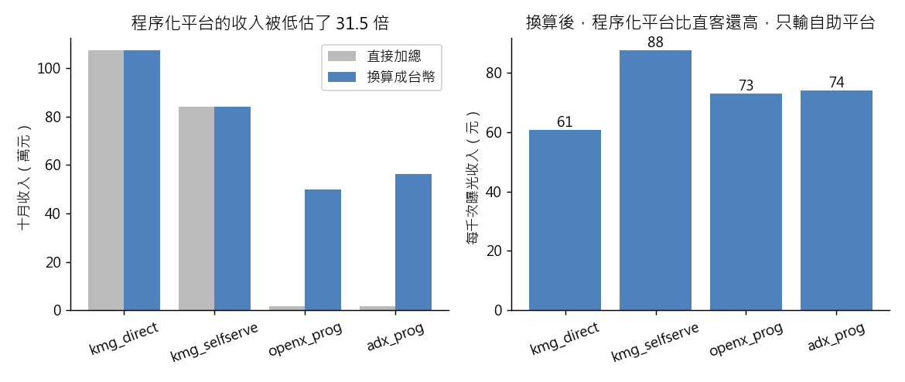

練習 02 - 程序化平台該不該停
在本單元中，會介紹第 2 題「兩家程序化廣告平台十月只收三萬多，業務主管問要不要停掉」從頭到尾實際跑一次的方法、跑出來的數字，以及畫出來的圖。
這一頁是做完之後對答案用的。還沒動手的話，先回 Hub - 資料分析練習案例庫 找到這一題，照「怎麼做」那一欄自己跑一次再回來。
題目
有人會這樣問你：十月廣告收入 195 萬，openx 跟 adx 兩家程序化平台加起來才三萬出頭，是不是該把它們關掉，版位全部留給自家業務？
| 難度 | 入門 |
| 組別 | 第 1 組：先把一張表讀對 |
| 用哪張表 | ad_daily（L1／L2 的 ad_daily_2024_10.csv） |
| 對應單元 | 讓 AI 算的數字對不對 |
方法
先問資料字典一個問題：revenue 旁邊為什麼要多一欄 currency。按 currency 分組各自加總，把 USD 的列乘上匯率換成台幣再合併（匯率不在資料裡，要自己定一個並在報告裡標明來源，例如 1 USD = 31.5 TWD），最後算每千次曝光收入（收入 ÷ 曝光數 × 1000）比較四個平台。用 Python，因為 pandas 可以用一行條件式依 currency 逐列換算再 groupby，852 列不會有任何一列被漏掉。
程式
這一題用 Python，整支程式如下。資料放在 dist/L1 與 dist/L2 兩個資料夾。
from _kmg import *
r = R(2, "兩家程序化廣告平台十月只收三萬多，業務主管問要不要停掉")
a = ad()
a["twd"] = twd(a)
naive, conv = float(a["revenue"].sum()), float(a["twd"].sum())
r.chk("直接加總（元）", 1947799, round(naive), tol=2)
r.chk("換算後總額（元）", 2975076, round(conv), tol=2)
r.chk("直接加總少報的比例", 0.345, 1 - naive / conv, tol=0.01)
cur = a.groupby("platform")["currency"].unique().apply(lambda x: ",".join(sorted(x))).to_dict()
r.chk("各平台幣別", {"adx_prog": "USD", "kmg_direct": "TWD", "kmg_selfserve": "TWD", "openx_prog": "USD"}, cur)
prog = a["platform"].isin(["openx_prog", "adx_prog"])
r.chk("程序化換算後收入（元）", 1060959, round(float(a.loc[prog, "twd"].sum())), rel=0.01)
r.chk("程序化佔全站廣告收入", 0.357, float(a.loc[prog, "twd"].sum()) / conv, tol=0.005)
g = a.groupby("platform").agg(t=("twd", "sum"), rv=("revenue", "sum"), i=("impression_cnt", "sum"))
ecpm = g["t"] / g["i"] * 1000
r.chk("adx_prog 每千次曝光收入", 74, float(ecpm["adx_prog"]), tol=1.5)
r.chk("openx_prog 每千次曝光收入", 73, float(ecpm["openx_prog"]), tol=1.5)
r.chk("kmg_direct 每千次曝光收入", 61, float(ecpm["kmg_direct"]), tol=1.5)
r.chk("kmg_selfserve 每千次曝光收入", 88, float(ecpm["kmg_selfserve"]), tol=1.5)
r.chk("收益率最高的平台", "kmg_selfserve", ecpm.idxmax())
r.note("四個平台換算後的每千次曝光收入：" + "、".join("%s %.1f 元" % kv for kv in ecpm.items()))
naive_prog = float(a.loc[prog, "revenue"].sum())
r.pit(naive_prog < 40000, "直接加總時，兩家程序化平台合計只有 %s 元，看起來真的只收三萬多" % format(round(naive_prog), ","))
med = a.groupby("currency")["revenue"].median()
ratio = float(med["TWD"] / med["USD"])
r.sc(10 <= ratio <= 100 and conv > naive,
"台幣列的收入中位數是美金列的 %.1f 倍，差一到兩個數量級；換算後總額 %s 元大於直接加總 %s 元" % (
ratio, format(round(conv), ","), format(round(naive), ",")))
order = ["kmg_direct", "kmg_selfserve", "openx_prog", "adx_prog"]
fig, ax = plt.subplots(1, 2, figsize=(9, 3.8))
x = np.arange(len(order))
ax[0].bar(x - 0.2, g.loc[order, "rv"] / 1e4, 0.4, label="直接加總", color="#bbbbbb")
ax[0].bar(x + 0.2, g.loc[order, "t"] / 1e4, 0.4, label="換算成台幣", color="#4f81bd")
ax[0].set_xticks(x, order, rotation=20)
ax[0].set_ylabel("十月收入（萬元）")
ax[0].set_title("程序化平台的收入被低估了 31.5 倍")
ax[0].legend()
ax[1].bar(x, ecpm[order], color="#4f81bd")
for i, v in enumerate(ecpm[order]):
ax[1].text(i, v, "%.0f" % v, ha="center", va="bottom")
ax[1].set_xticks(x, order, rotation=20)
ax[1].set_ylabel("每千次曝光收入（元）")
ax[1].set_title("換算後，程序化平台比直客還高，只輸自助平台")
save_fig(fig, "ex02_platform_revenue.png")
r.save()
程式裡的 r.chk(項目, 預期值, 實算值) 是對照檢查，把入口頁寫的數字跟實際算出來的放在一起比；r.pit 記錄坑有沒有出現，r.sc 記錄自己驗那一步有沒有效。畫圖的部分在程式最後面。
程式開頭的 from _kmg import * 載入共用的讀檔、去重、換幣別與畫圖函式，內容在 練習 01 - 月會上的則數對不對 的「共用的讀檔函式」那一段。
結果
revenue 欄混了兩種幣別：kmg_direct 與 kmg_selfserve 記台幣，openx_prog 與 adx_prog 記美金。直接加總得到 194.8 萬，換算後其實是 297.5 萬，原本的算法少報了約三分之一。兩家程序化平台不是只收 3 萬，是收了約 106 萬，超過全站廣告收入的三分之一；每千次曝光收入 adx_prog 74 元、openx_prog 73 元，比自家直客的 61 元還高，只輸給自助平台的 88 元——原本要被關掉的，其實是收益率排第二、第三的通路。
實際跑出來的數字
下表每一列都是程式實際算出來的值，11 項全部跟上面那段文字對得起來。
| 項目 | 實跑結果 |
|---|---|
| 直接加總（元） | 1947799 |
| 換算後總額（元） | 2975076 |
| 直接加總少報的比例 | 0.3453 |
| 各平台幣別 | adx_prog USD、kmg_direct TWD、kmg_selfserve TWD、openx_prog USD |
| 程序化換算後收入（元） | 1060959 |
| 程序化佔全站廣告收入 | 0.3566 |
| adx_prog 每千次曝光收入 | 74.1451 |
| openx_prog 每千次曝光收入 | 73.0295 |
| kmg_direct 每千次曝光收入 | 60.682 |
| kmg_selfserve 每千次曝光收入 | 87.5492 |
| 收益率最高的平台 | kmg_selfserve |
補充
- 四個平台換算後的每千次曝光收入：adx_prog 74.1 元、kmg_direct 60.7 元、kmg_selfserve 87.5 元、openx_prog 73.0 元
圖表

左圖灰色是直接加總、藍色是換成台幣後的十月收入，兩個程序化平台的灰色長條幾乎看不見。右圖是換算後的每千次曝光收入，程序化平台比自家直客高，只輸給自助平台。
這題的坑，實際跑的時候有沒有出現
對應 KMG 埋的「幣別混用」陷阱。sum(revenue) 不會跳任何錯誤訊息，加出來的 194.8 萬也像個合理數字，所以沒有人會回頭懷疑。記住這條通則：表裡只要出現 currency 這種「單位欄」，就代表旁邊那個金額欄的單位不是固定的，不可以直接加。
實際跑的結果：直接加總時，兩家程序化平台合計只有 33,681 元，看起來真的只收三萬多。
自己驗那一步抓不抓得到錯
先跑 groupby('currency')['revenue'].median()，USD 那一群的中位數會比 TWD 小一到兩個數量級，看到這種量級差就知道不能混加；換算完的總額一定要比原本直接加總的大，如果算完反而變小，就是匯率乘錯邊了。
實際跑的結果：台幣列的收入中位數是美金列的 32.5 倍，差一到兩個數量級；換算後總額 2,975,076 元大於直接加總 1,947,799 元。
接著做
上一題 練習 01 - 月會上的則數對不對、下一題 練習 03 - 最佳報導獎發給誰，或回到 Hub - 資料分析練習案例庫 挑別的題目。
學生版｜更新於 2026-09-13 10:38